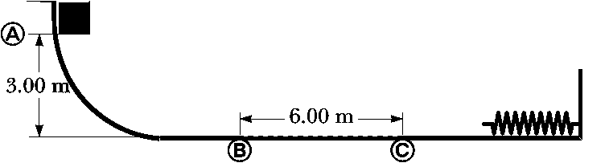
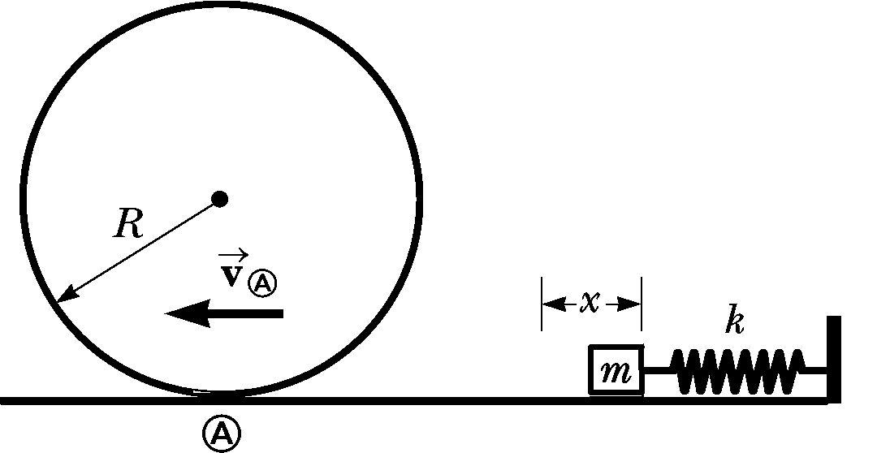

Homework 4 - Energy
Problem 4.1
Using the definition of the scalar product, find the angles between
- \(\vec{\mathbf{A}} = 3\,\hat{\mathbf{i}} - 2\,\hat{\mathbf{j}}\) and \(\vec{\mathbf{B}} = 4\,\hat{\mathbf{i}} - 4\,\hat{\mathbf{j}}\)
- \(\vec{\mathbf{A}} = -2\,\hat{\mathbf{i}} + 4\,\hat{\mathbf{j}}\) and \(\vec{\mathbf{B}} = 3\,\hat{\mathbf{i}} - 4\,\hat{\mathbf{j}} + 2\,\hat{\mathbf{k}}\)
- \(\vec{\mathbf{A}} = \hat{\mathbf{i}} - 2\,\hat{\mathbf{j}} + 2\,\hat{\mathbf{k}}\) and \(\vec{\mathbf{B}} = 3\,\hat{\mathbf{j}} + 4\,\hat{\mathbf{k}}\)
Problem 4.2
When an object is displaced by an amount \(x\) from stable equilibrium, a restoring force acts on it, tending to return the object to its equilibrium position. The magnitude of the restoring force can be a complicated function of \(x\). In such cases, we can generally imagine the force function \(F(x)\) to be expressed as a power series in \(x\) as \[F(x) = -(k_1\,x + k_2\,x^2 + k_3\,x^3 + \cdots)\] The first term here is just Hooke’s law, which describes the force exerted by a simple spring for small displacements. For small excursions from equilibrium, we generally ignore the higher-order terms, but in some cases it may be desirable to keep the second term as well. If we model the restoring force as \[F = -(k_1\,x + k_2\,x^2)\] how much work is done on an object in displacing it from \(x = 0\) to \(x = x_{\text{max}}\) by an applied force \(-F\) ?
Problem 4.3
A \(200~g\) block is pressed against a spring of force constant \(1.40~kN/m\) until the block compresses the spring \(10.0~cm\). The spring rests at the bottom of a ramp inclined at \(60.0^\circ\) to the horizontal. Using energy considerations, determine how far up the incline the block moves from its initial position before it stops
- If the ramp exerts no friction force on the block
- If the coefficient of kinetic friction is \(0.400\)
Problem 4.4
An electric scooter has a battery capable of supplying \(120~Wh\) of energy. If friction forces and other losses account for 60.0% of the energy usage, what altitude change can a rider achieve when driving in hilly terrain if the rider and scooter have a combined weight of \(890~N\)?
Problem 4.5
A \(10.0~kg\) block is released from rest at point A in the below figure. The track is frictionless except for the portion between points B and C, which has a length of \(6.00~m\). The block travels down the track, hits a spring of force constant \(2250~N/m\), and compresses the spring \(0.300~m\) from its equilibrium position before coming to rest momentarily. Determine the coefficient of kinetic friction between the block and the rough surface between points B and C.

Problem 4.5
A block of mass \(m=0.500~kg\) is pushed against a horizontal spring of negligible mass until the spring is compressed a distance \(x\), as shown below. The force constant of the spring is \(450~N/m\). When it is released, the block travels along a frictionless, horizontal surface to point A, the bottom of a vertical circular track of radius \(R=1.00~m\), and continues to move up the track. The block’s speed at the bottom of the track is \(v_A = 12.0~m/s\), and the block experiences an average friction force of \(7.00~N\) while sliding up the track.
- What is x?
- If the block were to reach the top of the track, what would be its speed at that point?
- Does the block actually reach the top of the track, or does it fall off before reaching the top?
